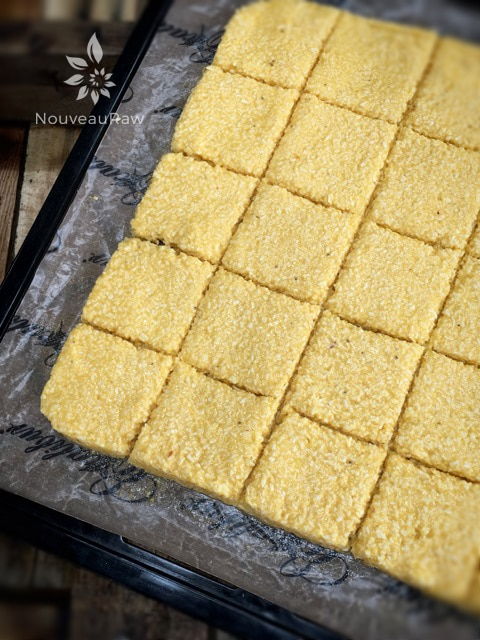
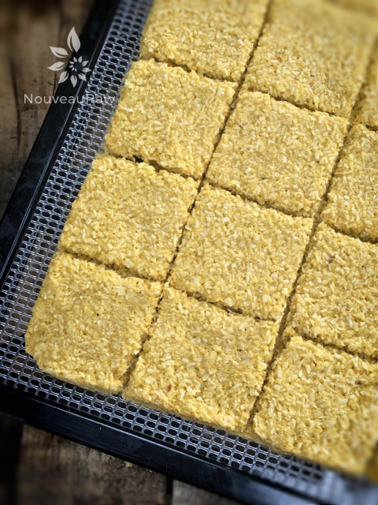

Mighty Mango Ginger Coconut Crackers
 served with almond milk")
~ raw, vegan, gluten-free, nut-free ~
Oh, the mighty mango. Once peeled, they can be slippery, slimy, and shoot of our of your hands like an oiled football. I speak from experience, trust me, I have shot my fair share of them across the kitchen. No problem, retrieve it, wash it off, and devour it like there is no tomorrow. There is no such thing as the three-second rule in my kitchen. :)
A mango isn’t just a mango. Like all fruits and veggies, there is always a sweet spot where it is perfectly ripened and suitable for the gods. Many mango experiences tend to be disappointing and stringy. Worse case scenario, it can taste bland or like turpentine, or even just taste adequate but not memorable.
Mangoes still convert the starches to sugar and ripen after they’ve been picked… BUT if you are blessed enough to live near a mango tree it is best tasting when plucked when ripe.
The health of the mango starts on the inside, which can make it tricky when it comes to selecting one. If they are bad, they start rotting right from the seed, so you might find yourself heartbroken when you slice into what appears to a perfect mango. But this can often be avoided if you pass up the mangos with lesions or brownish-black spots.
Over-ripe mangos don’t just equate to “sweeter”, the sugars start to ferment and can give the fruit an alcohol flavor which can throw off your whole recipe. You know that I am a huge proponent of tasting your ingredients before using them and this isn’t any different.
To add a layer of complexity, I added the gentle heat of ginger to balance the sweet mango flavor. Now, you can ramp up the ginger if you love that “heat” but be careful that it doesn’t overtake the whole cracker. There are so many wonderful health benefits to ginger, so it is well worth your time to use it. A few of the most prominent nutrients in ginger include; amino acids, calcium, essential fatty acids, iron, magnesium, manganese, phosphorus, potassium, selenium, zinc, Vitamins B1, B2, B3, B6, C, and Vitamin A. I said “a few” but shoot… that seems like a healthy dose of goodness to me.
You are going to love these simple crackers. Not only are they balanced perfectly in flavor, but they also make for a healthy snack. Best enjoyed alone. No need to slather on any further competing flavors. They are firm, crunchy, light and airy. And in case you forgot…. raw, vegan, gluten-free, nut-free, seed-free, soy-free, no added sugars… oh, grain-free! Don’t think “BORING!” With one bite you will soon realize that your mouth isn’t watering – it’s crying tears of joy. With love and blessings, amie sue
Ingredients:
Yields 16 crackers
- 3 cups (236 g) shredded dried, coconut
- 1 Tbsp ground Ceylon cinnamon
- 1 tsp grated fresh ginger or 1/2 tsp ground ginger
- 1/4 tsp Himalayan pink salt
- 2 cups (313 g) fresh, diced mango
- 1 cup (127 g) diced banana
- 1 Tbsp maple syrup (optional)
Preparation:
- In a food processor, fitted with the “S” blade, combine the shredded coconut, cinnamon, ginger, and salt. Make sure they get well mixed.
- If you don’t have shredded coconut but have large pieces of dried coconut… that’s ok too. Just make sure to process it until it reaches a small crumble size. This is the “flour” for the cracker base.
- Add the mango, banana, and sweetener (if needed), processing until it becomes a spreadable batter.
- If you are trying to reduce your added sugars, try a squirt of liquid NuNaturals stevia.
- Be sure to taste test and see if you want more of the ginger flavor to shine through.
- Line the dehydrator tray with a non-stick teflex sheet.
- Spread the batter from edge to edge or until it reaches at least 1/4″ thick. I wouldn’t go any thinner, so you have a nice sturdy cracker.
- Make sure that you spread it evenly, so it dries evenly.
- Score the crackers into desired shapes and sizes. You can use a pizza cutter or a long metal ruler to create the score marks. I used my 6-wheel pastry cutter.
- Sprinkle coarse sea salt on top. This will add a layer of flavor as well as amp up the sweet flavors.
- Dehydrate at 145 degrees (F) for 1 hour, then reduce to 115 degrees (F) and continue drying for 10+ hours… until dry and crispy.
- Part way through the dry time, flip the crackers onto the mesh sheet that comes with the dehydrator to speed up the dry time. You can do this at any point, as long as they are dry enough on the one side so that the batter doesn’t stick to the nonstick sheet when removing it.
- Snap apart and let cool before storing, store in an airtight bag/container.
- They should last several weeks in the pantry or frozen for 1-2 months. If they start to soften due to humidity, throw them back in the dehydrator to crisp up.
Culinary Explanations:
- Why do I start the dehydrator at 145 degrees (F)? Click (here) to learn the reason behind this.
- When working with fresh ingredients, it is important to taste test as you build a recipe. Learn why (here).
- Don’t own a dehydrator? Learn how to use your oven (here). I do however truly believe that it is a worthwhile investment. Click (here) to learn what I use.

Above, the crackers are heading into the dehydrator for a warm tropical vacation. Below, the vacation is over, and they are ready to go!

© AmieSue.com